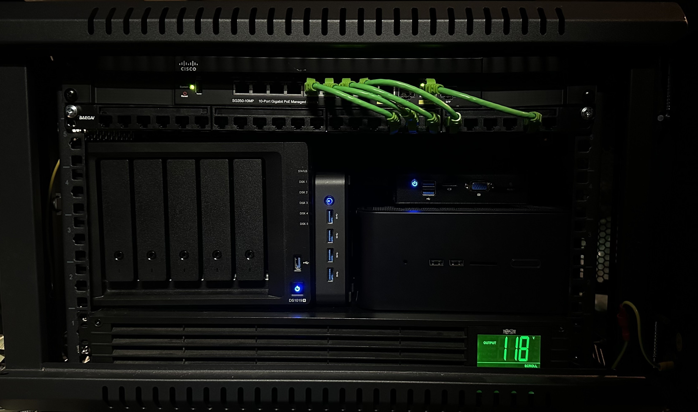

Information Technology ePortfolio
Projects
Home Lab
Lately, I've been spending much of my free time working on my home lab. It currently has a 5-bay NAS, a 10-port managed switch, a dedicated micro-appliance running pfSense as my firewall, a dedicated server for Home Assistant, and a dedicated NUC for AI-powered surveillance processing (still a work in progress).

I started this rack almost a year ago, and since then, not one thing has stayed the same except for the rack itself. Although, it might be time to upgrade that soon.